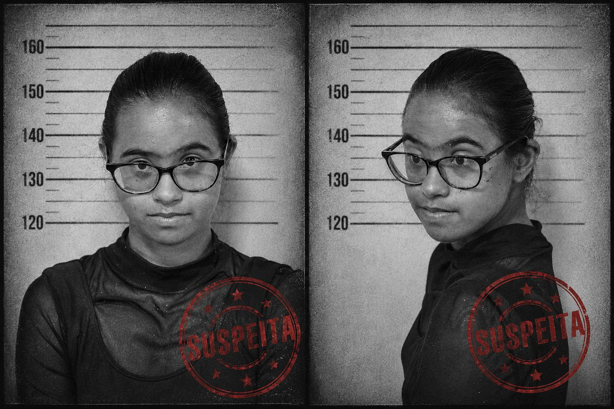
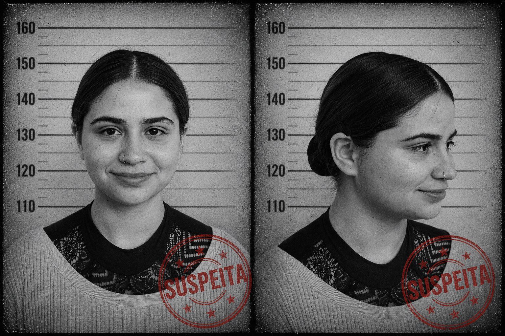
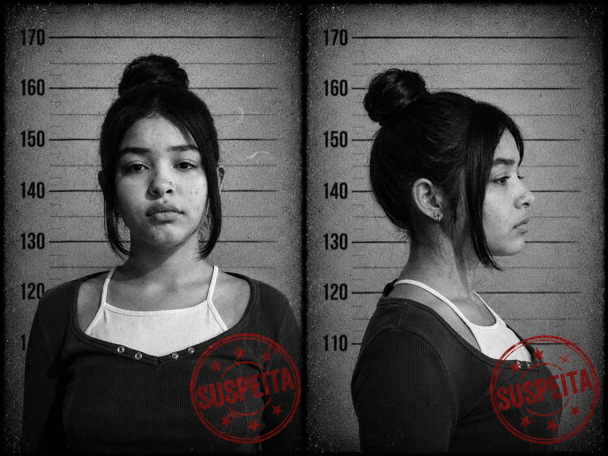
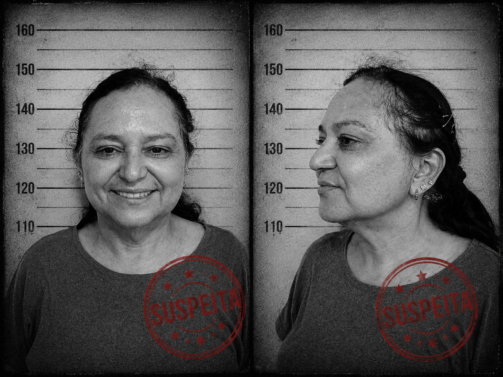

Clarice
ID: B-2/002
Relação: —
Identificação: Revólver —
Motivação: Tinha uma antiga rivalidade com Daniel. Acreditava que ele era responsável por prejudicar sua reputação anos atrás e nunca superou o ressentimento.

Cecília
ID: C-7/001
Relação: Amiga
Identificação: Lenço branco / guardanapo
Motivação: Conhecida pela imagem de "boa moça", mas sua proximidade com a vítima desperta suspeitas.
Malu
ID: M-4/040
Relação: Representante legal da vítima
Identificação: Veneno
Motivação: Profissional séria e observadora, acompanhava de perto todos os assuntos relacionados à vítima.

Mia
ID: J-3/007
Relação: Colega de trabalho
Identificação: Corda
Motivação: Tinha raiva do professor, pois acreditava que ele roubava sua cartela de clientes.

Rosalinda
ID: A-6/007
Relação: Tia
Identificação: Tesoura
Motivação: Deseja a morte do sobrinho para se tornar a única herdeira da família, pois enfrenta dificuldades financeiras.